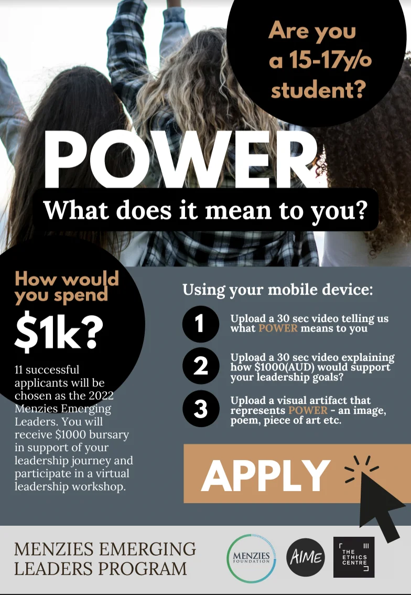

What do leaders do? Who are the leaders in your life who have helped you?
Adults aren’t the only leaders. People of all ages can be leaders in so many ways. When are you, were you, or could you be a leader?
Even if you are not 18 yet, you have the right to give your opinions freely on issues that affect you, and adults should respect your views and take you seriously.
You also have the right to freedom of expression; to share what you learn, think and feel. Freedom to find out more and share ideas too, however you choose, by talking, writing or in print, art, or any other way unless it harms other people.
There are different opportunities and events around our country that provide opportunities to explore leadership further and assist you putting your ideas into action. Following are just a few of them.
Junior Lord Mayor
Junior Lord Mayor of Melbourne Competition
August 30th is Melbourne Day and on this day the new Junior Lord Mayor is announced. You can learn more about Melbourne Day and this competition on https://www.melbourneday.com.au/
"It's such an important program for helping people understand how the city works." — Lord Mayor Sally Capp speaking about The Junior Lord Mayor program.
Each year Victorian students in Years 4, 5 or 6 (or aged 9 to 13) are invited to enter the competition to become the next Junior Lord Mayor.
Entrants are encouraged to think and write about the big issues in Melbourne, what they love about Melbourne and also what they would aim to do if they became Junior Lord Mayor.
Entries for the Junior Lord Mayor of Melbourne Competition close midnight August 9.
While this is a Victorian event, different suburbs and states have various competitions and events similar to this, including junior councils. You could find out what is happening for young people in the area where you live or neighbouring areas.
Melbourne’s Junior Lord Mayor for the last 12 months and until Melbourne Day is Daniel Lan.
"It's such an important program for helping people understand how the city works."
— Lord Mayor Sally Capp speaking about The Junior Lord Mayor program.

The Menzies Foundation is delighted to invite young people who are interested in leadership and realise the importance of leadership that is for the greater good.
In partnership with the Ethics Centre and AIME this initiative will support young Australians and a global community of young people to deeply engage with ethical challenges and build leadership capability.
In essence, the program is open to all Australian applicants and together with its valued partners, the Menzies Foundation aims to connect with students in their senior years at school to understand their perspectives on the world’s leadership challenges and work to support and to address these challenges.
To apply you can go directly to the link:
https://www.menziesfoundation.org.au/power
Best wishes to all interested in applying for these programmes and all those exploring Leadership further from their contexts and perspectives. If you have any queries, please contact karin.morrison@gmail.com